For no reason, I started screaming.
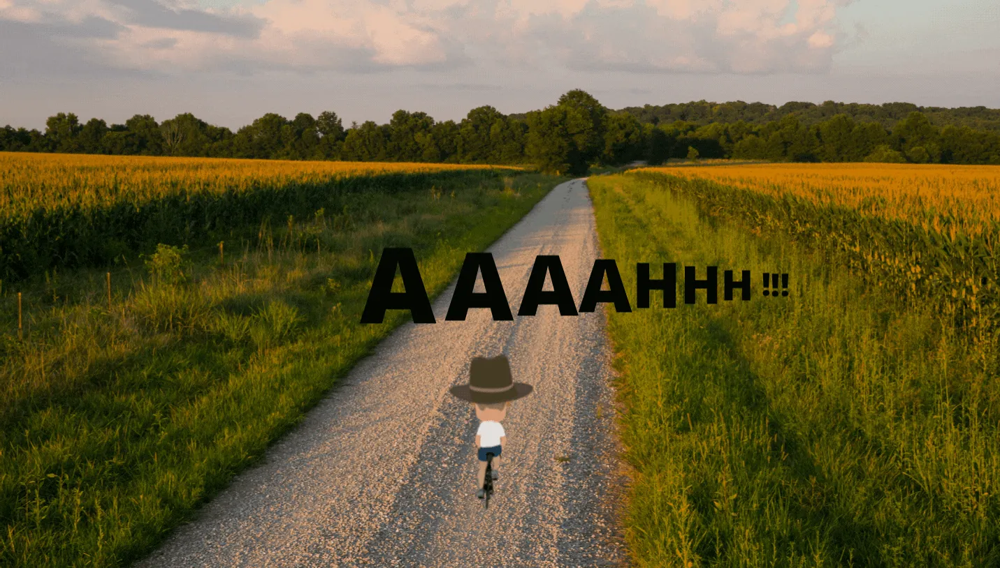
No one heard my screams. I was 168 miles into Unbound 200, and by this time, the 960 or so starters had shattered against the miles, steep hills, and humid blast furnace of Kansas in early June. Riders were spaced every half mile down endless stretches of dust in their own private hell.
The wind gathered up my pathetic screams, spread them to the prairie, smiled, and said, simply and painfully, ‘there’s only one way back to Emporia…”
...Pedal, bitch."
What is the soul of Unbound Gravel? The moment 25 miles after months of careful planning has fallen apart. You’ve already decided to quit—everything, including your face, cramps. Even the thought of eating makes you want to throw up, your stomach muscles hurt from breathing, your feet are on fire, your hands are numb from pinched nerves, you’ve lost a contact and can barely see, every direction you turn seems to meet an interminable headwind. Your bike creaks ominously with every pedal stroke.
What is your internal counter? Nothing. The simple truth is if you keep pedaling, however slowly, you’ll keep moving, and though it feels unlikely, unbearable even, the grade school logic you’re capable of in such a state isn’t wrong – if you can keep pedaling, you will finish.
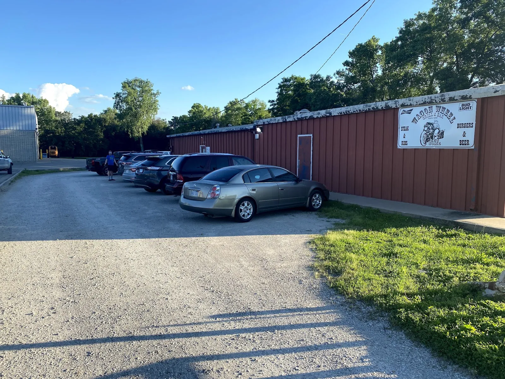
Hours before, my buddy and I took our last meal in a dive bar a short walk from the Emporia fairgrounds. We could have had Applebees, but when Google surfaces a 4.4-star storage container partially located in a ditch boasting the best ribeye in Kansas, well, you stop.
“I have a dumb request,” I told the impossibly tall, blonde bartender at the Wagon Wheel Bar and Grill.
Her eyebrow raised. She grimaced like I was about to ask when she was getting off and if she wanted to take a ride in my 1998 Cummings Diesel Dodge Ram. Instead, I asked her for another smoked potato.
“Just a potato?”
“Yeah.”
“You don’t want butter or sour cream?” Now I was making her nervous again.
“Oh, hell yeah, I’ll need both.”
“I’ll put in the order.” I was on her good side again.
“Oh, before you go, have I exhausted your Miller Lite supply, or do you have another?”
“I’m sure I can find you one.”
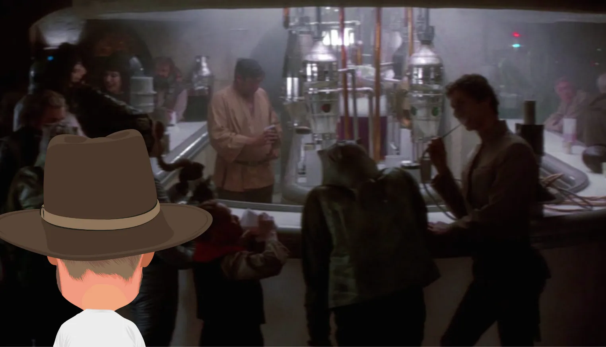
She left, and as she did, my line of sight cleared to the other side of the bar where a couple sat. A flushed, heavy-set man with troubled skin and piercing eyes called out in an accent of grunts.
"Here for the race?"
F. I was wearing a cowboy hat and a black shirt. I’d tried to dress as neutrally as possible, so if we entered this dive bar on the fridges of Emporia, someone couldn’t take one look at me and decide, “yuppie’. Yet, no matter what I wore, I’m not fleshy by Kansas standards, and the way I shape my vowels wouldn’t go undetected by a local, even if my upbringing in Wisconsin gives me a decent accent to hide behind.
“That’s right,” I said. “First time.”
He whistled softly. “Weather looks good. Some years back, a storm came through, and it was rough. Bad rain. Cyclists all over the place.”
His wife chimed in. “My daughter’s husband’s cousin knew someone who saw someone who might have ridden in this race before. You’re crazy. They seemed to like it, though. She had cancer, and her boy liked it.”
I nodded solemnly.
“Yeah, I’m nervous,” I offered.
“Should be. It’s a long way.”
“Yeah, where do you guys live?”
“On a ranch. Go North of Highway 56 on briarwood lane for a few miles than a left and right up a lane behind that tree, and we’ve got ourselves a nice spread up there.”
“Oh, is that close to Council Bluffs?” It was the only town I knew besides Emporia in Kansas.
They erupted in laughter.
“Council Bluffs?? Hahaha. If you’re riding up in Iowa, you’ve lost your way. We live by Council Grove.” Dammit. Of all the things to out me as a local, I would never have bet my geography would let me down.
“Well, we’ll be off.” The man clapped me on the shoulder. “Good luck!”
The blonde bartender retrieved an enormous smoked potato from a confused cook and placed it in front of me.
“There you go.”
The steaming bites of potato were the last food I’d wolf down before the gun went off in a couple of hours, and 900 of us rode off into the teeth of Kansas.
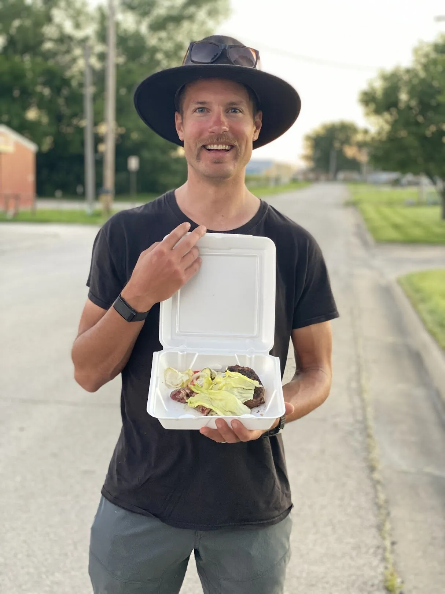
Howdyshell and I exited the Wagon Wheel bar into the thick June Kansas air, picked up a 30 rack of Miller Lite, and walked past the no alcohol signs into the RV campground past hundreds of other Unbound racers huddled in the half-light around their RVs. People laughed after we passed, the sight of two skinny bros lugging a 30 rack through a campground 8 hours before a 200-mile race overcoming the instinct to be polite.
We threw on the generator in the RV and sat across from each other and made plans, pretending that our words were something that would counter the wrath of 206 miles of Kansas.
I fell asleep sideways on a shitty mattress listening to nonsense, scared but thrilled. Tomorrow would be hard but simple. I didn’t have time to wonder if I was a good person, or dad, or husband, or friend, and even if all those things clasped at the edges of my consciousness, I knew this race, if nothing else, would demand one thing, and only one thing, for however long it took, and that was everything.
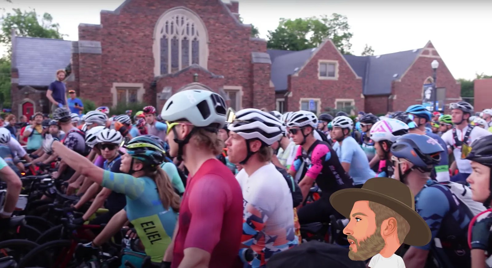
The gun went off, and after 4 miles of breathless jostling for positioning into the first turn, we hit gravel. I slalomed through the masses and edged up toward the front until we hit washboards and suddenly heard a loud thunk and the sickening torment of a pissed-off wheel. I glanced around briefly, thinking it was someone else before the reluctant rotation of my back wheel confirmed what I suspected – it was me. I looked down. My spare tube had loosened from my saddlebag and fallen into the rotor of my rear wheel.
I stopped, leaped off my bike, and tried to remove it quickly. It wouldn’t move. I pulled harder and only succeeded in ripping off half the tube that wasn’t twisted in the spokes.
Fugg. 4 miles in, and I’m down my only tube and completely stopped.
I could spend the following five paragraphs detailing how I removed the wheel, extracted the tube, and then lit the boilers and blew by 100 people, got another flat, fixed it while swarmed with mosquitoes, blew by the same 100 people I just blew by, got another flat, fixed it, then endoed through a shaded section of high-speed gravel downhill, somehow didn’t break my wheel and kept on pouring out an immense amount of energy in an attempt to regain the front group, but all of that feels like excuses that don’t capture the core truth that I didn’t have the legs or experience to make or stay in the front group and, worst of all, I did not respect what 206 miles actually asks of you.
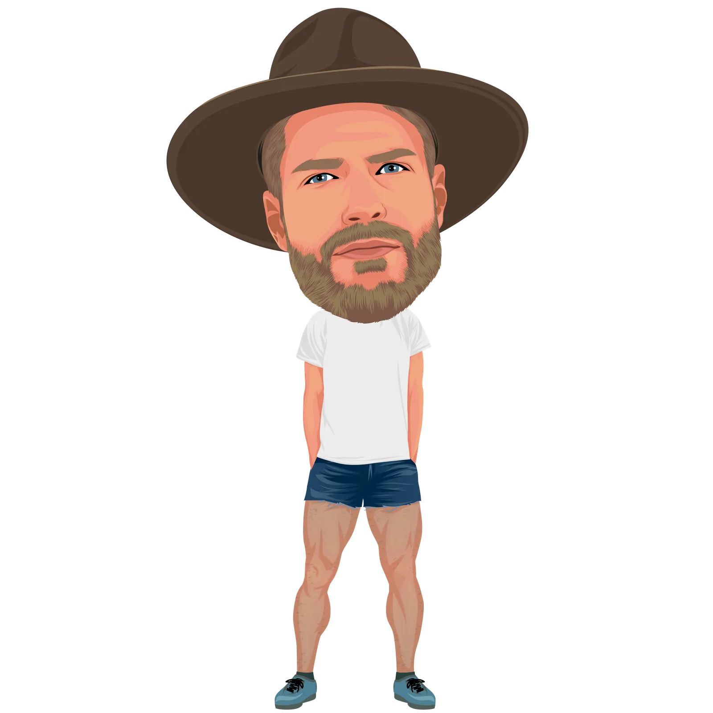
When I passed 96 miles, I cracked.
which neatly coincided with the most brutal miles of Unbound Gravel and the hottest part of the day.
Between 96 miles and 155 miles, I died a thousand deaths. I could no longer eat. I tried to eat, I promise you. I tried to take down Honey Stinger waffles. I tried to eat cliff bars. I tried everything. I threw it all up. My body was not in a consensual mood, so I stopped trying and pretended my Norwegian birthing hips would be all I needed to ride another 100 miles in 90-degree humidity.
The climbs tormented me. Undergeared, I stomped my way through absurd, rocky jeep road after jeep road. I walked through river crossings, fearing flats. My feet inflamed, and I loosened the straps to ease the coals in my feet. I prepared to quit.
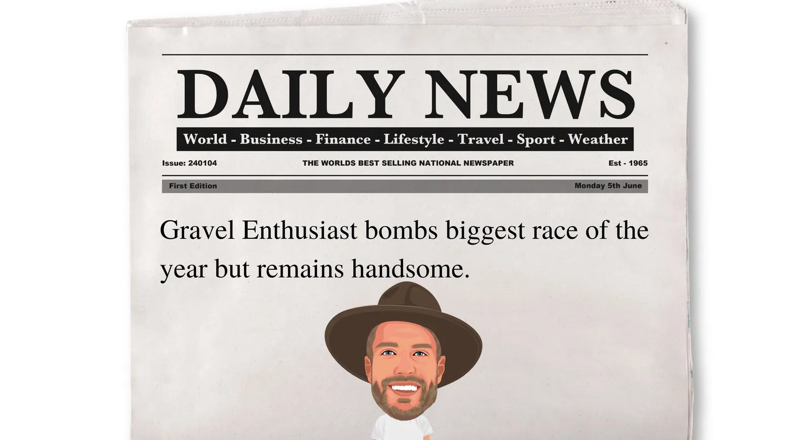
I came up with headlines for articles. I came up with reasonable explanations for my failings. I listened to pain and conceded the floor. When I arrived at the second and last aid station at mile 155, I was met with Howdyshell’s insufferable enthusiasm.
"Yeahhhhhhh buddddy! What do you need?"
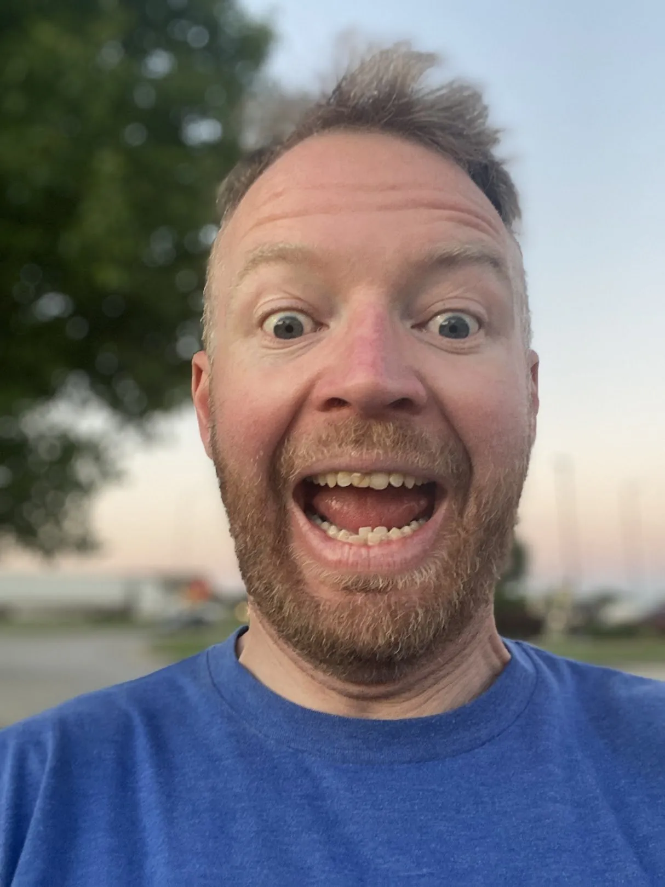
I couldn’t talk. “Joey, I can’t eat.” I collapsed on the grass under a tree. My legs twitched involuntarily.
Joey forced me to drink. He forced me to eat a sandwich. He forced me to speak. His will smashed the excuses I didn’t have the strength to voice. He encouraged me, and I hated him for it. Before I knew what was happening, I was pedaling again, him behind me, giving me hell, and I rose out of the town back into the implacable dust to face what I signed up for – a long afternoon will all my darkness.
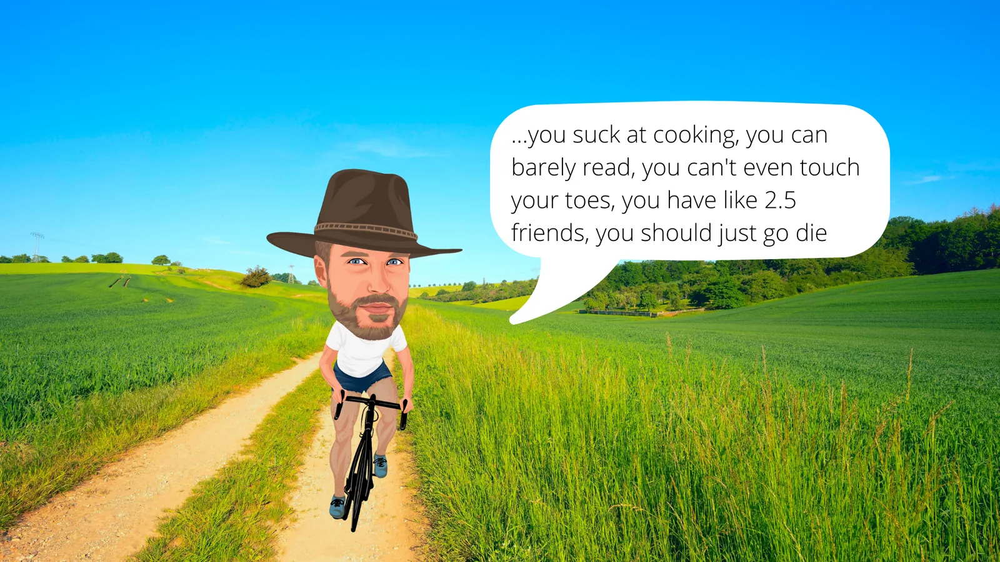
I don’t like me. When you’re nothing, reduced to simpering strands of flesh and salt-encrusted pain, all those subterranean psyches you pretend don’t exist but really run everything emerge. In this state, your prefrontal cortex is not in charge. You’re an animal. You’re a ragged, desperate, seething mess. You’re a spectator to random, inexplicable feral outbursts of rage as you put yourself through pain you can’t imagine you can endure.
I thought of strange things. I thought of Tour riders in 1910 and how they did this for three weeks straight on shitty bikes. I thought of Sara Lee butter bread and the ideal toaster setting. I thought of my family, my beautiful boy sending it down the stairs on his strider bike, my daughter creating art and going over the meaning of each line of crayon, and my wife, without whom this moment of extreme despair would not be possible. Sadly, and with some relief, I thought that no one would understand how I felt, ever, and that the emptiness in these plains was someone my own. I decided to stop buying Keto bread from Costco and that my cottage cheese consumption was not just wrong, but morally wrong, and I should let other people in the world have dairy, and walking isn’t, in principle, dumb.
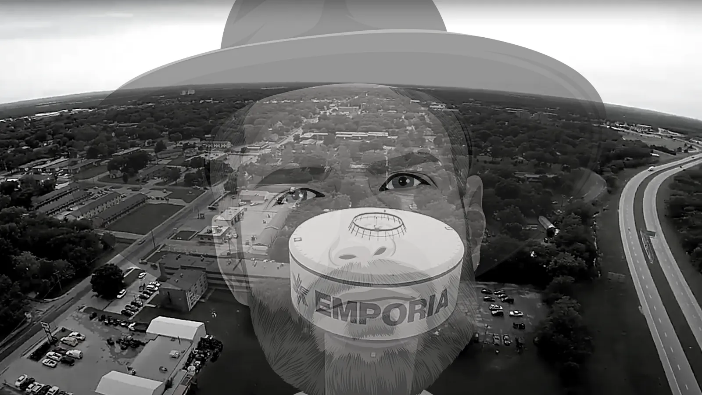
I could see the water tower of Emporia rising tantalizingly above the surrounding bluffs and half-assed trees of the Kansas plains. I toiled in anger, tore up the final climb, skated through the Emporia college campus and, freewheeled down the finishing straight into a wall of applause. I slapped hands down the corridor and offered a smile to the swell of the throng, crossing the line to the relief of collapse.
People gave me things, and I found Joey. I’m not much for touching, but I grabbed the pale Irishman and offered him a full-throated, unironic hug.
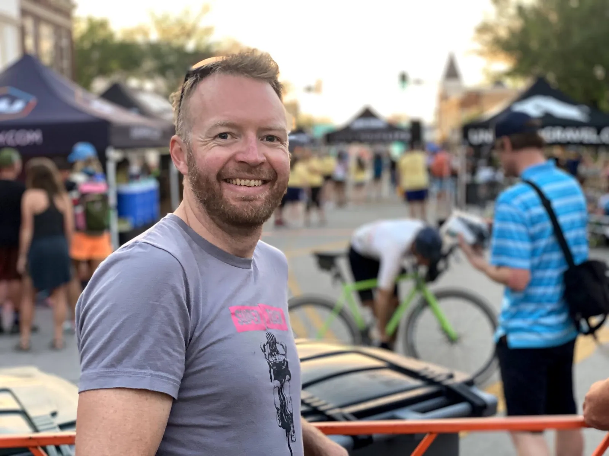
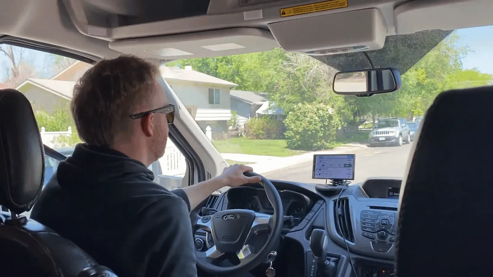
Hours later, after the most painful shower of my life, Howdyshell and I sat on a curb amid the post-race party, carefully slamming beers and woofing down absurd servings of pork-laden nachos and spicy tacos.
We didn’t say much. We watched young love walk by, maskless laughter, the roaring June stars above this nothing, everything town, and all my cares fell aside to the demands of tacos, suds, and surrender.
I knew that tomorrow we’d awake and press that pedal down and strain the RVs 350 to the breaking against the plains, exchange short words, and slowly the world would creep back in with its demands.
But for now, I was empty and happy and filled with something I’d call life.

How to Unbound Gravel 200
Fitness
I’m going to shamelessly rip off my friends idea here: the fitness you need to do Unbound depends on the experience you want. Do you want to:
A) Avoid paying for therapy, subject yourself to one of the hardest physical experiences of your life, all to induce a non pharmacological hallucenogenic experience?
B) Finish?
C) Do really, really well?
If your answer is A or B, it’s pretty simple – ride a little before the race, make sure you turn up with a bike that actually works and will probably survive the gravel, and strap in – it’s going to be a long, painful day.
If your answer is C, there’s really only one way forward – you have to train your a$ off.
Minimally you’ll want to start preparing 12 weeks in advance and work yourself up to the point where you can at least do a 8-hour ride at race pace.
What kind of workouts should you do? Easy – get my training plan and find out. Better yet – get some coaching, then you’ll really start flying.
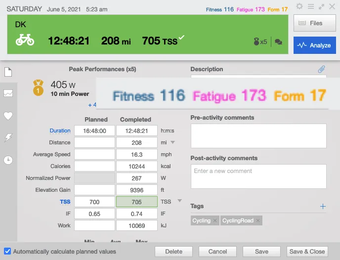
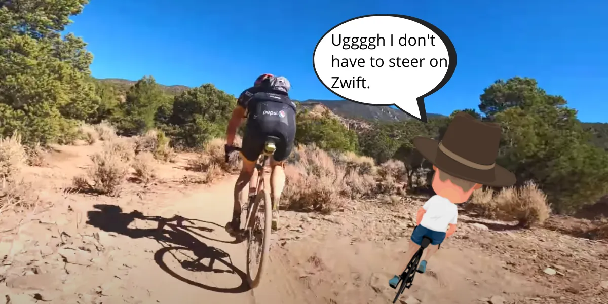
Skills
If you’re a skilled off-road bike handler and love sending it down sketchy trails, you’re in luck, because you’ll be getting at least 100 miles (not all of Unbound Gravel’s roads are rough gravel) worth of goat paths, jeep roads chunk gravel, washed-out roads, creek crossings, and whatever else Kansas can throw at you.
If you’re not a good bike handler, do two things:
- Buy a cheap mountain bike – it doesn’t have to be nice. Or get a nice one – I don’t know your household budget.
- Get mountain biking lessons.
Yep, it’s an investment on your part, but I guarantee you that it will make you faster, happier, and safer.
Gravel racing is like MTB racing – there’s more to going fast than just mashing the pedals the hardest – you need skill.
Your skill will also go hand in hand with your equipment selection. If you’re less skilled, it’s smarter to pick a bigger tire width that’ll be more forgiving.
Equipment
Early on, I saw a guy riding a time trail bike with aero wheels gleefully passing columns of cyclists. Fast forward about 45 minutes later, I saw him in a ditch next to a small creek trying to figure out how he was going to ride the next 156 miles on a cracked rim.
Lesson? Don’t F around with your bike and wheel choice at Unbound.
While I’m sure there are a few people that got away with less than a 35 mm tire at Unbound, I wouldn’t recommend it. Kansas is just too unforgiving to get cute with your tire width.
In other words, do NOT run anything less than a 38mm tire under any circumstances.
Remember, no matter how something feels at the start, in the end, you’re going to be so wasted that you’ll feel every bump. A wider tire will ease your passage, guaranteed, and you’ll be grateful you did.
Also – use aero bars. I know it’s not ‘old school’ or arguably ‘true to the spirit’ but until they ban them, use them. Unbound, especially towards the end, features long, long stretches of windswept easily rideable miles. You’re going to be dying inside, and when you do, you’re going to wish you had given yourself another position to ride in that also allowed you to squeeze another mile an hour or two for the same effort.
Lastly, don’t let Kansas fool you – the hills are steep. Sure, in the beginning you can Jan Ullrich up everything with a 50 cadence, but towards the end? Yeah, give yourself more cadence options, otherwise you may find yourself walking or paper boying.
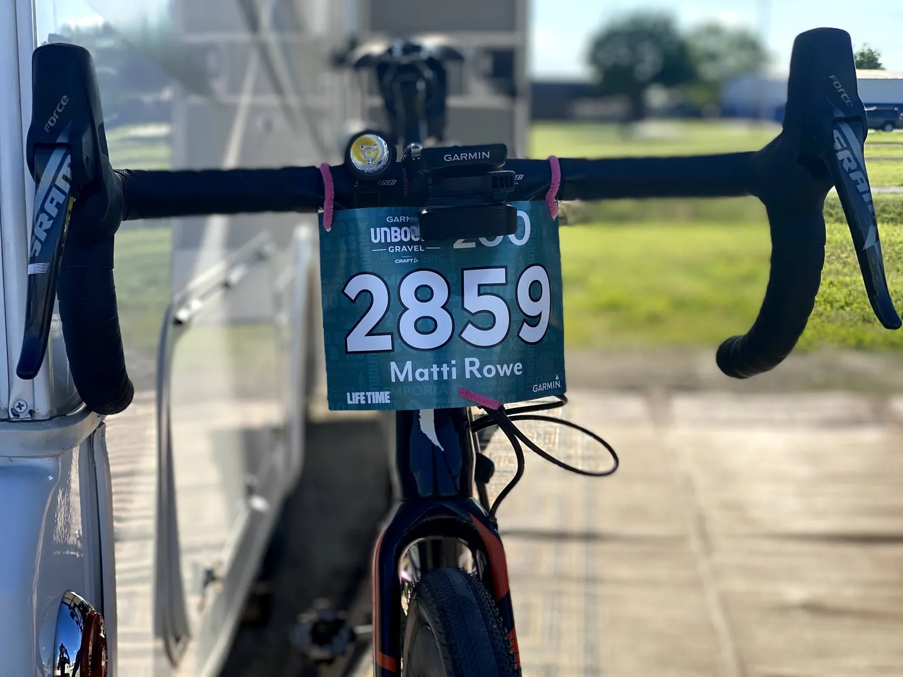
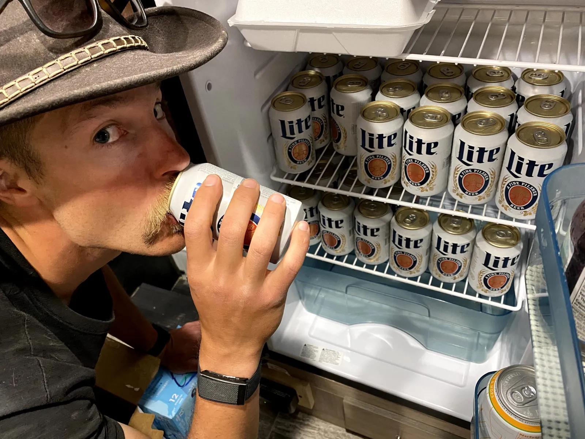
Hydation
Beyond being able to turn the pedals pretty hard for a long time, the greatest challenge at Unbound Gravel is hydration.
Broadly, two camps exist in how to deal with hydration – drink to thirst versus drink to a plan.
At Unbound Gravel 200, you need a plan. It’s too long and too hot to rely on your thirst mechanism for guidance.
First bit of advice – separate hydration from energy. In other words, drink to hydrate, eat to fuel.
Hydration starts before you pedal, because once the starter’s gun goes off, you’re fighting a losing battle with sweat losses.
The night before, drink a beverage with roughly 1000-1500 mg sodium. Pedialyte works great, even if it tastes weird.
90 minutes before the event, drink that again.
During the event, shoot to take down roughly 1,000 mg of sodium per hour. You can do this with a combination of premixed bottles as well as electrolyte tablets.
Oh, and yes, you should be using some sort of Camelpack. I don’t care how it looks – just bring one. You will ABSOLUTELY want/need that extra 1.5L of water between aid stations.
Nutrition
Fueling goes hand in hand with your hydration plan. As I recommended, use fluids for hydration, food for eating.
You’ll want to eat a combination of real food and gels. Even if you’re blindly fast, you’re in for a long day, with at least 10+ hours in the saddle. Most people will take roughly 15 hours.
Consequently, that’s a long time to just be taking down gels or sugar, and if you don’t through something else in the mix, more than likely your small intensity is going to get backed up, and you won’t be able to eat any longer.
If that happens, things get really, really painful because you have to slow down even more.
Whatever you eat, make sure race day isn’t the day you first try it. Most racers know that, but it’s always a temptation. Just don’t.
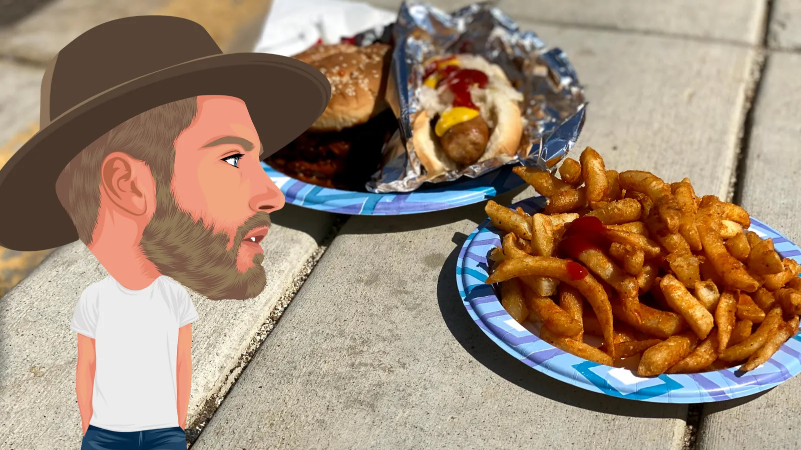
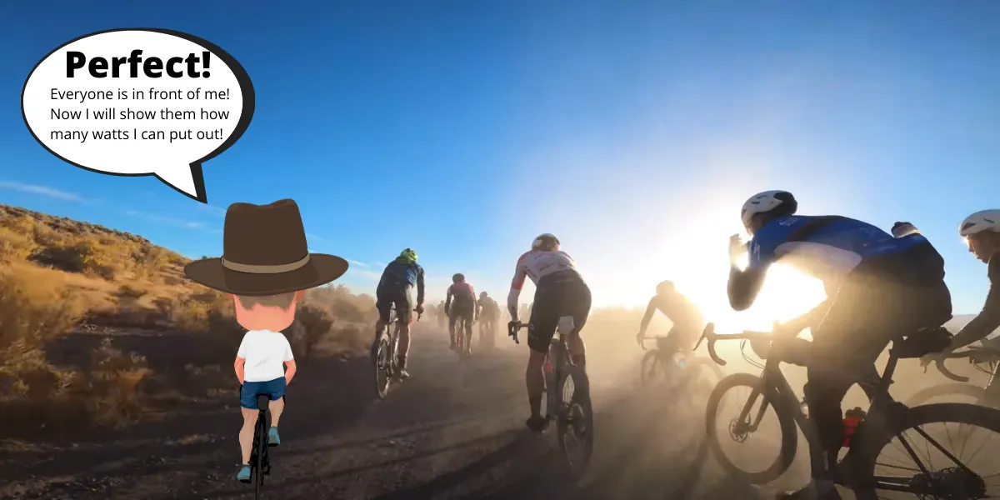
Tactics
Here’s a simple rule of thumb: If you’re not announcing your name at the start line as a possible contender, don’t bother trying to stay with the lead group.
“But I’m a dark horse! I will attack solo from the line and hold off 15 people with 10 years of the World Tour in their legs!”
That’s a bold move cotton. Here’s a better one: pace yourself.
It’s essential to your success at Kanza that you don’t pretend you can stay with the people they’re announcing. Ironically, if you don’t try to stay with the leaders, you’ll probably have a much better race.
Sure, in the top 15 wheels, it is like a road race where all the usual tactics matter. For the other 975 people, though? It’s not a race. It’s survival, and your place is a function of how well you manage your decline.
Simply put, 200 miles is a long, long way. Two hundred miles would be a long way if you were riding on perfect pavement with a tailwind. Except, at Kanza, you’re at least 1/3 of your day navigating Jeep trails, water crossings, and rutted-out farmer tracks. Oh, and you’re doing all this in humid, 90 + degree heat with only two official aid stations. The people they announced at the start line typically finish in 10 ish hours, which is probably close to or easily the longest ride you’ve ever done.
But you’re not going to finish in 10 hours. You’ll finish if you’re lucky in 13, or 15, or hell, even 17 hours.
For this reason, the most critical factor of your success at Kanza is keeping your intensity low. Luckily, there’s a metric to quantify that relative to everyone – intensity factor.
Intensity factor is your normalized power divided by your threshold power. IF is helpful because, at a glance, you can see how hard an effort was for an athlete in relation to their threshold. 1.0 is an all out effort at threshold for an hour, .55 is recovery pace.
So what’s the ideal IF for Kanza? Your target IF for Kanza should not exceed .69.
Intensity factor, from the Tactics section
Where 0.69 sits
- Recovery pace0.55
- Author’s planned IF0.65
- The post’s ceiling for the race0.69
- Author’s completed IF0.74
- All-out hour at threshold1.00
Pick one of your best friends to crew you
I wouldn’t have finished Unbound 200 without Joe Howdyshell, aka Pale Thunder.
Unbound isn’t like other bike races – it takes everything you’ve got and once it has that you realize you still have 55 miles left.
There’s just not enough of you to handle the enormous logistical demands of Unbound AND bring 💯 to race day.
Sure, you can rent a crew, and that works for some people, but Unbound is less a race and more of a baptism – do you want to do it alone?
Here’s a better idea – bribe one of the people that matter most to you in the world to come out and support you. The best way to go fast is to make Unbound weekend less about racing, and more about kickin’ it with your friend.
Pale Thunder and I rented an RV ( a first for both of us) and had a solid 4 days together talking shop, crackin’ beers, eating strange midwest meats, and figuring out life. In four days we crammed in the same about of quality time we normally get in half a year.
Unbound could be a highlight of your year or a sterile affair staring at the TV in the Best Western. As my colleague reminds me, bike racing isn’t about going fast, it’s about having fun. For that, you’ll need your people.
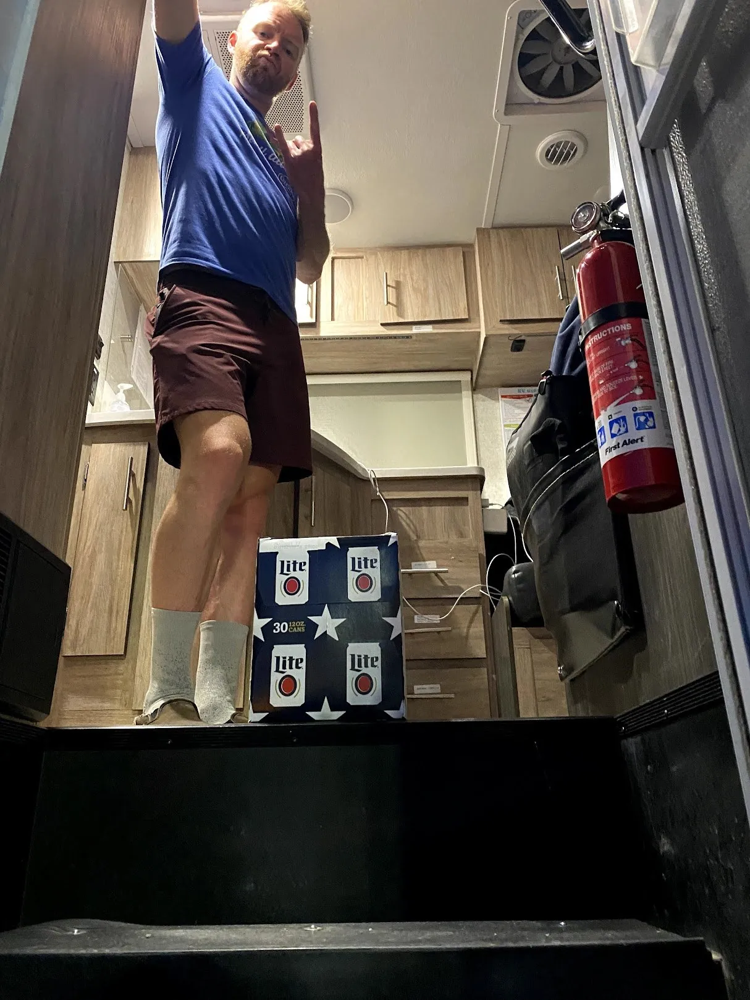
Comments
1 comment from the original post. Comments are closed.
Bill ·
Great article, Matti. I followed your plan for 13 weeks, was fitter than I’ve been in 20 years, met awesome people in training and in Emporia, and finished in……17hrs! Hardest physical activity I’ve ever done and I’ve finished multiple marathons in wicked heat. Every anecdote and recommendation in here is spot on. This is a must ride…